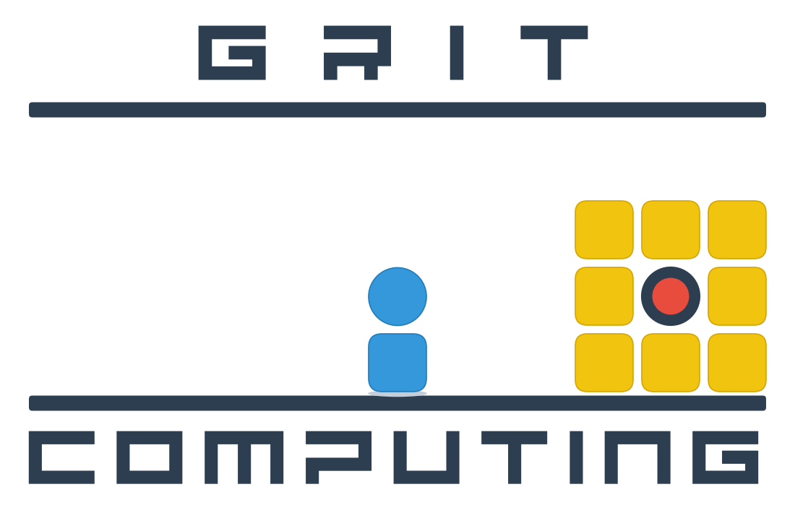
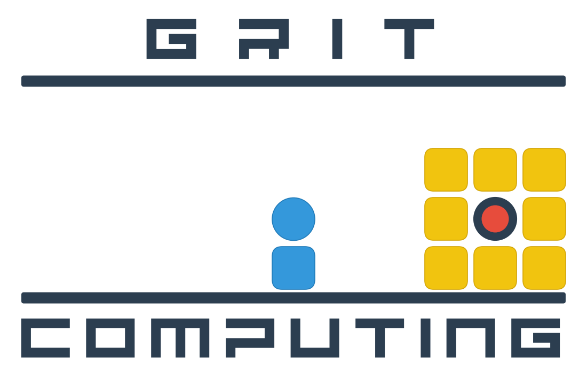
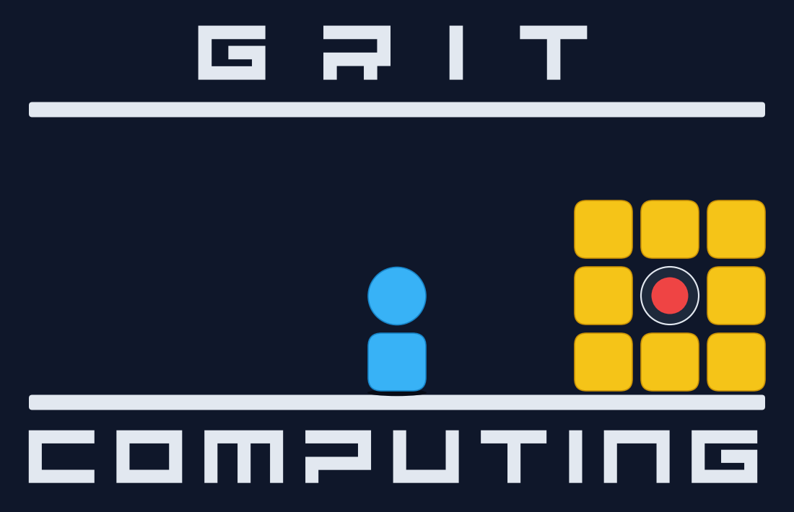

Personal Web & Social Media Animations
Custom hero and brand animations for personal websites and social media profiles authored declaratively with Drawlib and AI—compiled via drawlib.anim.Animation (1100 × 710 px, 25 fps) into lossless APNG, compact Animated WebP, and universal dither-free GIF.





